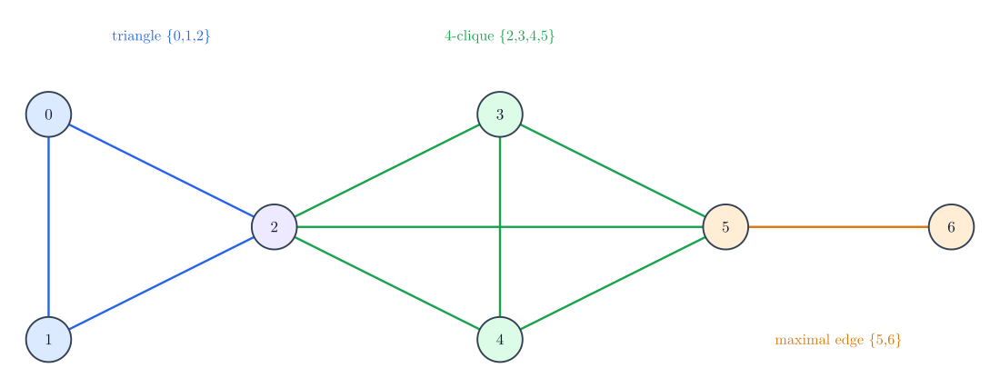
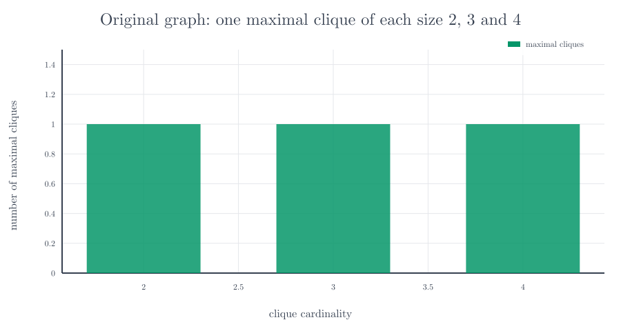
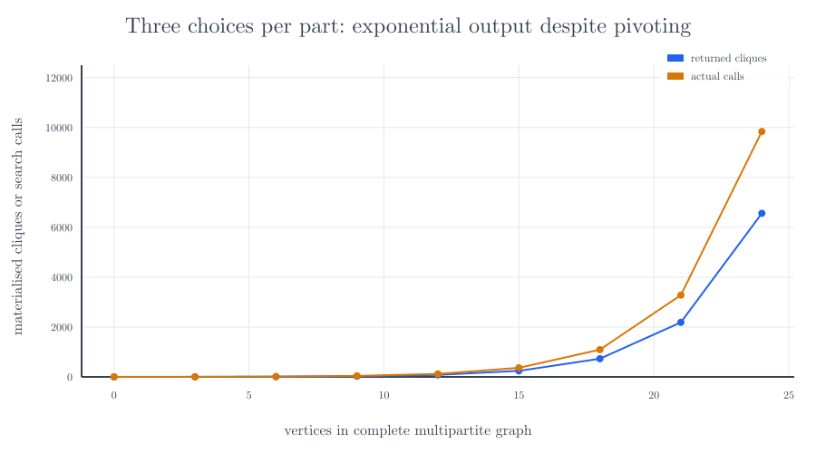

Bron–Kerbosch: Every Maximal Clique and the Excluded Set
Abstract
Given an undirected graph, list every clique that cannot be extended by another vertex. A maximal edge can coexist with a larger clique, and the number of answers can grow exponentially. We retain the original seven-vertex example, inspect actual candidate and excluded sets, and check a generated family with exactly three choices per part. Native C++ supplies the cliques, pivot frames, size histogram, work counts and multipartite inputs. The analysis distinguishes maximality from maximum size and output volume from elapsed time.
Original graph: a triangle, a four-clique and a maximal edge
The original graph contains the triangle {0,1,2}, the four-clique {2,3,4,5} and the pendant edge {5,6}. All three are maximal: no outside vertex is adjacent to every member. Only the four-clique is maximum, meaning largest by cardinality. The pair {2,1} is a clique but is not maximal, since zero can be added. That distinction will appear in a real excluded-set record below.
#include <dm/dm.hpp>
int main() {
std::filesystem::create_directories("build");
const std::vector<std::vector<int>> adjacency{{1,2},{0,2},{0,1,3,4,5},{2,4,5},{2,3,5},{2,3,4,6},{5}};
const auto trace=dm::algorithms::bron_kerbosch_trace(7,adjacency);
const std::vector<dm::graphics::DiagramPoint> position{{-4,2},{-4,-2},{0,0},{4,2},{4,-2},{8,0},{12,0}};
dm::graphics::Diagram diagram(65,1100);
for (int u=0;u<7;++u) for (int v:adjacency[u]) if (u<v) {
dm::graphics::DiagramStroke stroke;stroke.width=2.5;
stroke.color=v<=2?dm::RGB{37,99,235}:u>=2 && v<=5?dm::RGB{22,163,74}:dm::RGB{217,119,6};
diagram.path({position[u],position[v]},stroke);
}
dm::graphics::DiagramNodeStyle style;style.circle=true;style.width=.8;style.height=.8;style.padding=7;
for (int v=0;v<7;++v) {
style.fill=v<=1?dm::RGB{219,234,254}:v==2?dm::RGB{237,233,254}:v<=4?dm::RGB{220,252,231}:dm::RGB{255,237,213};
diagram.node(std::format("v{}",v),position[v],std::format("{}",v),style);
}
diagram.text({-2,3.4},"triangle {0,1,2}",17,{37,99,235})
.text({4,3.4},"4-clique {2,3,4,5}",17,{22,163,74})
.text({10,-2},"maximal edge {5,6}",17,{217,119,6})
.save_svg("build/bron_kerbosch_graph.svg");
std::print("| discovery position | maximal clique | size |\n| ---: | :--- | ---: |\n");
for (std::size_t i=0;i<trace.cliques.size();++i)
std::print("| {} | {} | {} |\n",i,trace.cliques[i],trace.cliques[i].size());
std::print("\nVertices: {}; unique undirected edges: {}; input adjacency entries: {}.\n",
trace.vertex_count,trace.edge_count,trace.input_adjacency_entries);
}| discovery position | maximal clique | size |
|---|---|---|
| 0 | [0, 1, 2] | 3 |
| 1 | [2, 3, 4, 5] | 4 |
| 2 | [5, 6] | 2 |
Vertices: 7; unique undirected edges: 10; input adjacency entries: 20.

Candidate and excluded sets: why both must be empty
A search frame maintains a clique R and two disjoint sets of vertices adjacent to every vertex in R. P contains remaining candidates; X contains excluded vertices already processed by preceding choices. X does not mean a list of vertices that have already been reported as complete cliques.
Selecting v adds it to R and intersects both P and X with its neighbours. After that child returns, the parent removes v from P and appends it to X. A frame reports R exactly when both P and X are empty. If either contains a vertex, that vertex can still extend R, so R is not maximal. Passing excluded vertices into later children prevents rediscovering an earlier maximal extension. This is the candidate/exclusion mechanism of [Bron and Kerbosch's Algorithm 457](https://doi.org/10.1145/362342.362367).
Choose a pivot u from P union X that maximises its number of neighbours in P. The actual branch snapshot is P minus N(u), in P order. To see why this covers the remaining maximal extensions, consider an extension avoiding X. If it contains u, it meets that snapshot because u is not adjacent to itself. If it omits u and all its added vertices neighbour u, then u could extend it, contrary to maximality. Thus a remaining maximal extension must meet the branch snapshot. For u in X, an extension containing u is already excluded; the same argument covers the others. This is a coverage argument, not a guarantee of small output.
The implementation scans P before X and retains the first maximum-scoring pivot. The following records are actual recursion entries, captured before each frame mutates its own P and X. R retains search insertion order; only returned clique members are sorted. A later child's sets therefore reflect preceding sibling choices, not merely its parent's unmodified snapshot.
#include <dm/dm.hpp>
int main() {
std::filesystem::create_directories("build");
const std::vector<std::vector<int>> adjacency{{1,2},{0,2},{0,1,3,4,5},{2,4,5},{2,3,5},{2,3,4,6},{5}};
const auto trace=dm::algorithms::bron_kerbosch_trace(7,adjacency);
std::print("| frame | parent / selected v | R | P | X | pivot | branch snapshot | reports R |\n"
"| ---: | :--- | :--- | :--- | :--- | ---: | :--- | :--- |\n");
for (const auto& node:trace.nodes)
std::print("| {} | {} | {} | {} | {} | {} | {} | {} |\n",node.id,
node.id?std::format("{} / {}",node.parent,node.via_vertex):"root",node.r,node.p,node.x,
node.pivot,node.branch_vertices,node.reported);
std::print("\nActual calls: {}; branches: {}; maximum R size: {}.\n",
trace.recursive_calls,trace.branches,trace.max_depth);
std::print("Pivot-scoring probes: {}; branch-snapshot probes: {}; child-intersection probes: {}.\n\n",
trace.pivot_tests,trace.branch_tests,trace.intersection_tests);
std::vector<double> size,count;
std::print("| clique size | maximal cliques |\n| ---: | ---: |\n");
for (std::size_t k=0;k<trace.clique_size_counts.size();++k) if (trace.clique_size_counts[k]) {
size.push_back(k);count.push_back(trace.clique_size_counts[k]);
std::print("| {} | {} |\n",k,trace.clique_size_counts[k]);
}
dm::graphics::RPlot::create().bars(size,count,"maximal cliques",dm::RGB{5,150,105},.6)
.title("Original graph: one maximal clique of each size 2, 3 and 4")
.x_label("clique cardinality").y_label("number of maximal cliques")
.y_limits(0,1.5).size(900,480).save_svg("build/bron_kerbosch.svg");
}| frame | parent / selected v | R | P | X | pivot | branch snapshot | reports R |
|---|---|---|---|---|---|---|---|
| 0 | root | [] | [0, 1, 2, 3, 4, 5, 6] | [] | 2 | [2, 6] | false |
| 1 | 0 / 2 | [2] | [0, 1, 3, 4, 5] | [] | 3 | [0, 1, 3] | false |
| 2 | 1 / 0 | [2, 0] | [1] | [] | 1 | [1] | false |
| 3 | 2 / 1 | [2, 0, 1] | [] | [] | -1 | [] | true |
| 4 | 1 / 1 | [2, 1] | [] | [0] | 0 | [] | false |
| 5 | 1 / 3 | [2, 3] | [4, 5] | [] | 4 | [4] | false |
| 6 | 5 / 4 | [2, 3, 4] | [5] | [] | 5 | [5] | false |
| 7 | 6 / 5 | [2, 3, 4, 5] | [] | [] | -1 | [] | true |
| 8 | 0 / 6 | [6] | [5] | [] | 5 | [5] | false |
| 9 | 8 / 5 | [6, 5] | [] | [] | -1 | [] | true |
Actual calls: 10; branches: 9; maximum R size: 4. Pivot-scoring probes: 81; branch-snapshot probes: 17; child-intersection probes: 34.
| clique size | maximal cliques |
|---|---|
| 2 | 1 |
| 3 | 1 |
| 4 | 1 |

At the root, pivot two has five neighbours in P, so only vertices two and six are branch candidates. Inside R=[2], the pivot is three. Its branch snapshot is [0,1,3]. After processing zero, the parent moves zero into X. Selecting one then produces the non-reporting R=[2,1] frame. The search visits ten frames and reports three cliques. No second search or reconstructed tree supplies the records or counters.
A controlled family with exponentially many answers
Partition 3q vertices into q groups of three. The native complete-multipartite generator joins every pair from different groups and no pair within a group. A maximal clique must choose exactly one vertex from every group: two from one group are not adjacent, while omitting a group leaves a possible extension. There are therefore K=3^q distinct maximal cliques, each containing q vertices. The same argument gives a product of part sizes for unequal positive groups.
For these equal groups, every pivot leaves the three vertices of its group as branch candidates. Earlier siblings from that group are non-neighbours of the next choice and disappear from the child's X. Hence the call tree has three children per internal frame and depth q:
The programme checks both formulas against native counts. These are logical calls and materialised answers, not timings. With zero groups the existing API convention returns one empty clique; the table includes that control.
#include <dm/dm.hpp>
int main() {
std::filesystem::create_directories("build");
std::vector<double> vertices,cliques,calls;
std::size_t expected=1;
std::print("| groups q | vertices | actual maximal cliques | 3^q | actual calls | (3^(q+1)-1)/2 | maximum depth |\n"
"| ---: | ---: | ---: | ---: | ---: | ---: | ---: |\n");
for (int q=0;q<=8;++q) {
if (q) expected*=3;
const auto adjacency=dm::algorithms::complete_multipartite_graph(std::vector<int>(q,3));
const auto trace=dm::algorithms::bron_kerbosch_trace(3*q,adjacency);
const auto expected_calls=(3*expected-1)/2;
if (trace.cliques.size()!=expected || trace.recursive_calls!=expected_calls || trace.max_depth!=std::size_t(q)) return 1;
vertices.push_back(3*q);cliques.push_back(trace.cliques.size());calls.push_back(trace.recursive_calls);
std::print("| {} | {} | {} | {} | {} | {} | {} |\n",q,trace.vertex_count,trace.cliques.size(),
expected,trace.recursive_calls,expected_calls,trace.max_depth);
}
dm::graphics::RPlot::create().lines(vertices,cliques,"returned cliques",dm::RGB{37,99,235},2)
.points(vertices,cliques,"",dm::RGB{37,99,235},4)
.lines(vertices,calls,"actual calls",dm::RGB{217,119,6},2)
.points(vertices,calls,"",dm::RGB{217,119,6},4)
.title("Three choices per part: exponential output despite pivoting")
.x_label("vertices in complete multipartite graph").y_label("materialised cliques or search calls")
.y_limits(0,12500).size(900,500).save_svg("build/bron_kerbosch_output_growth.svg");
}| groups q | vertices | actual maximal cliques | 3^q | actual calls | (3^(q+1)-1)/2 | maximum depth |
|---|---|---|---|---|---|---|
| 0 | 0 | 1 | 1 | 1 | 1 | 0 |
| 1 | 3 | 3 | 3 | 4 | 4 | 1 |
| 2 | 6 | 9 | 9 | 13 | 13 | 2 |
| 3 | 9 | 27 | 27 | 40 | 40 | 3 |
| 4 | 12 | 81 | 81 | 121 | 121 | 4 |
| 5 | 15 | 243 | 243 | 364 | 364 | 5 |
| 6 | 18 | 729 | 729 | 1093 | 1093 | 6 |
| 7 | 21 | 2187 | 2187 | 3280 | 3280 | 7 |
| 8 | 24 | 6561 | 6561 | 9841 | 9841 | 8 |

If C is the actual number of calls and S counts returned vertex ids plus clique headers, this vector/matrix implementation has conservative work O(A+(n+1)²(C+1)+S log(n+2)), where A is the number of used input entries. Pivot scoring scans up to n candidates against up to n vertices at a frame; child intersections and vector copies add work, and emitted members are sorted. The returned lists use O(S) storage. The adjacency matrix and value-copied recursion sets use O(n²) storage, and retaining frame snapshots adds O((n+1)C). On the constructed family, explicitly writing members already costs Omega(q*3^q), before counting those search operations.
Output representation matters in general enumeration bounds. Tomita, Tanaka and Takahashi's [2006 analysis](https://doi.org/10.1016/j.tcs.2006.06.015) uses a compact tree output format in its proof. Here the interface returns full member lists, and the report accounts for that representation explicitly.
Normalisation, boundary cases and a complete-call budget
The existing API interprets each used adjacency entry as an undirected edge, even if only one orientation is supplied. It collapses duplicates, ignores valid self-loops and uses only the first n rows; extra rows remain ignored. The new validation checks that n is nonnegative, enough rows are supplied, and every used endpoint is in [0,n), before allocating the matrix. Inputs are borrowed for the call and never modified. Isolates are maximal singletons.
#include <dm/dm.hpp>
int main() {
struct Example {std::string name;int n;std::vector<std::vector<int>> adjacency;};
const std::vector<Example> cases{
{"zero vertices",0,{}},{"one isolate",1,{{}}},{"three isolates",3,{{},{},{}}},
{"one-way input chain",3,{{1},{2},{}}},{"duplicates and loops",3,{{0,1,1,2},{2},{2}}},
{"extra malformed row ignored",2,{{1},{},{-99}}}};
std::print("| case | unique edges | maximal cliques |\n| :--- | ---: | :--- |\n");
for (const auto& example:cases) {
const auto trace=dm::algorithms::bron_kerbosch_trace(example.n,example.adjacency);
std::print("| {} | {} | {} |\n",example.name,trace.edge_count,trace.cliques);
}
try {
dm::algorithms::bron_kerbosch(3,{{1},{0}});return 1;
} catch (const std::invalid_argument&) {
std::print("\nToo few adjacency rows are rejected.\n");
}
try {
dm::algorithms::bron_kerbosch(2,{{2},{}});return 1;
} catch (const std::out_of_range&) {
std::print("An out-of-range used endpoint is rejected.\n");
}
const auto adjacency=dm::algorithms::complete_multipartite_graph({3,3});
try {
dm::algorithms::bron_kerbosch_trace(6,adjacency,3);return 1;
} catch (const std::runtime_error&) {
std::print("A three-call budget rejects the incomplete search; no partial result is returned.\n");
}
}| case | unique edges | maximal cliques |
|---|---|---|
| zero vertices | 0 | [[]] |
| one isolate | 0 | [[0]] |
| three isolates | 0 | [[0], [1], [2]] |
| one-way input chain | 2 | [[0, 1], [1, 2]] |
| duplicates and loops | 3 | [[0, 1, 2]] |
| extra malformed row ignored | 1 | [[0, 1]] |
Too few adjacency rows are rejected. An out-of-range used endpoint is rejected. A three-call budget rejects the incomplete search; no partial result is returned.
A positive trace call budget throws before entering an excess frame. It limits search entries, not matrix allocation or total memory, and never returns a truncated list as though enumeration were complete. Zero means unlimited. Both ordinary and recorded APIs return owned lists; the ordinary API allocates no diagnostic records. Large outputs, snapshots and recursion depth can still be expensive, and allocation failures propagate.
References and verification
C. Bron and J. Kerbosch (1973), Algorithm 457: finding all cliques of an undirected graph, Communications of the ACM 16(9), 575–577, [doi:10.1145/362342.362367](https://doi.org/10.1145/362342.362367). The library uses deterministic maximum-neighbours-in-P pivot selection with vector intersections and an adjacency matrix. E. Tomita, A. Tanaka and H. Takahashi (2006), The worst-case time complexity for generating all maximal cliques and computational experiments, Theoretical Computer Science 363, 28–42, [doi:10.1016/j.tcs.2006.06.015](https://doi.org/10.1016/j.tcs.2006.06.015), discusses enumeration complexity and output representation.
The worked graph is fully specified, and the generated family is deterministic; no observational dataset or random seed is needed by the report. Native tests check every undirected graph through six vertices against exhaustive subset maximality, verify actual parent/sibling transitions and every logical counter, and cover random asymmetric/duplicated inputs, boundary validation, budgets, complete graphs and exact multipartite formulas. The existing SCC and clique regressions also pass. Each block is an editable complete C++ programme; figures are saved locally rather than printed as SVG text.